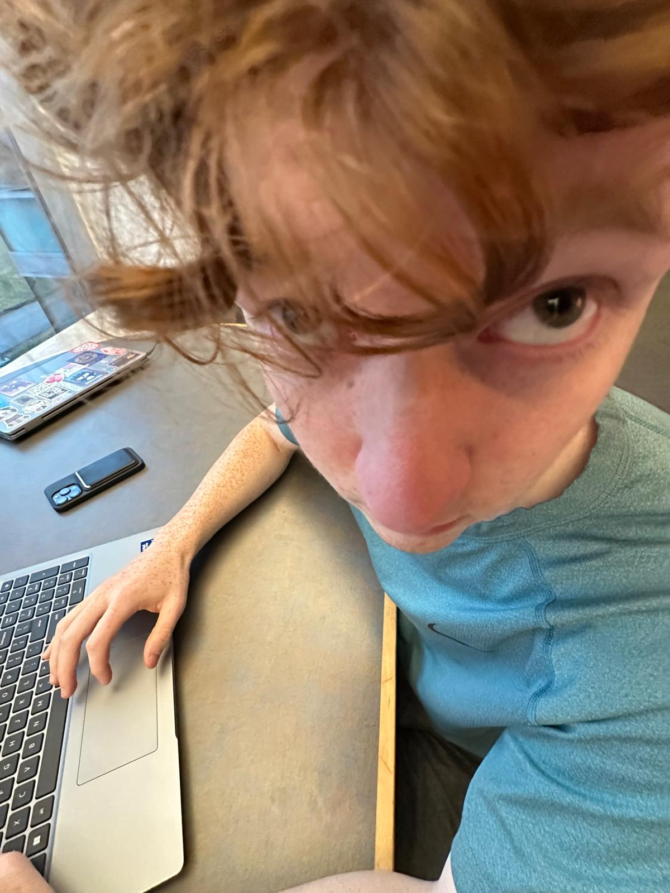
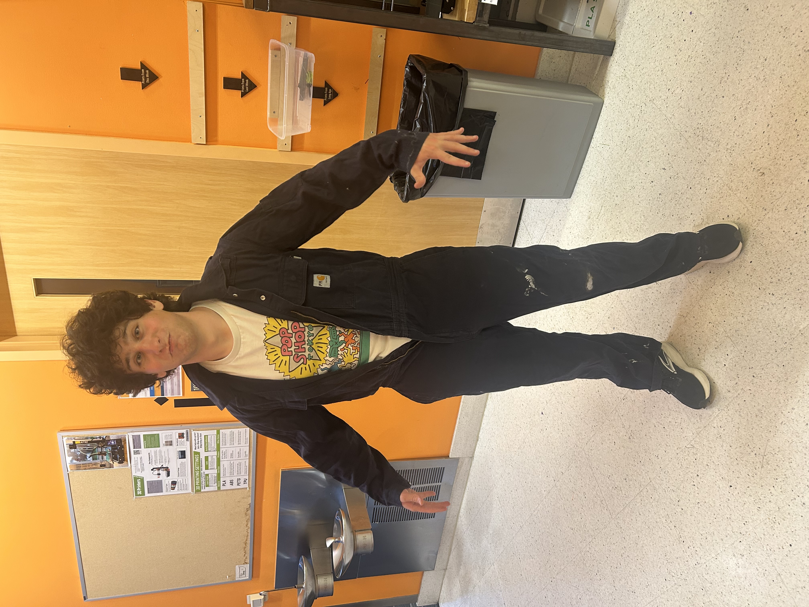
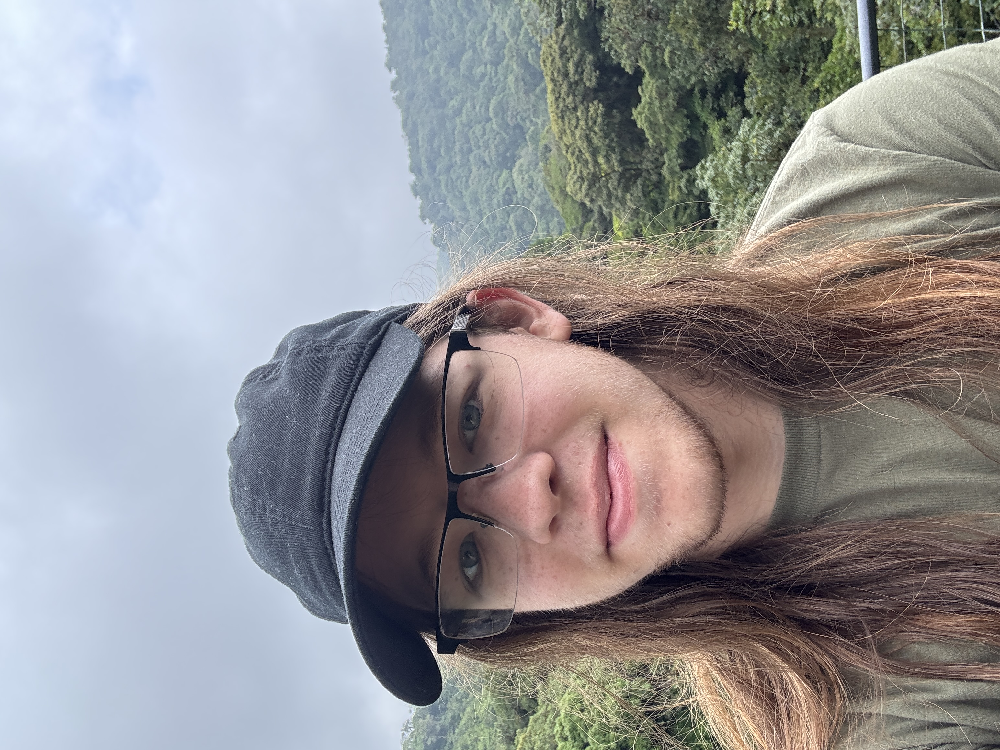

Grant is an Electrical Engineering Student at the Olin College of Engineering with an interest in PCB design. For this project, Grant designed most of the circuitry, creating system diagrams and wiring up the machine after mechanical made the frame. In his personal life, Grant enjoys skiing and Holonight.


Tierra is an Electrical Engineering student at The Olin College of Engineering. For this project, she calibrated the motors along with building out the structure of all of our code. In her personal life, she enjoys singing, playing the violin, and hanging out with friends.
Ivry is a Mechanical Engineering student with a heavy interest in programming, studying at The Olin College of Engineering, and is interested in Machine Learning and computer aided design. For this project, he used onshape to model a few of the parts and made this website with html and css. In his personal life, he loves cooking Italian food, playing chess, and Brazilian Jiu Jitsu.


Ben is a Mechanical Engineering student at The Olin College of Engineering. He is interested mainly in rapid prototyping and aerospace. For this project, Ben served as project manager, organizing tasks and leading mechanical design. In his personal life, Ben enjoys sailing, hiking, and ultimate frisbee.
Jake is a Mechanical Engineering Student at the Olin College of Engineering. He is interested mostly in testing, energy, and board game design. For this project, he worked mostly on fabrication, making our parts in the machine shop at school. In his personal life, Jake enjoys eating food, playing board games, and acting.
